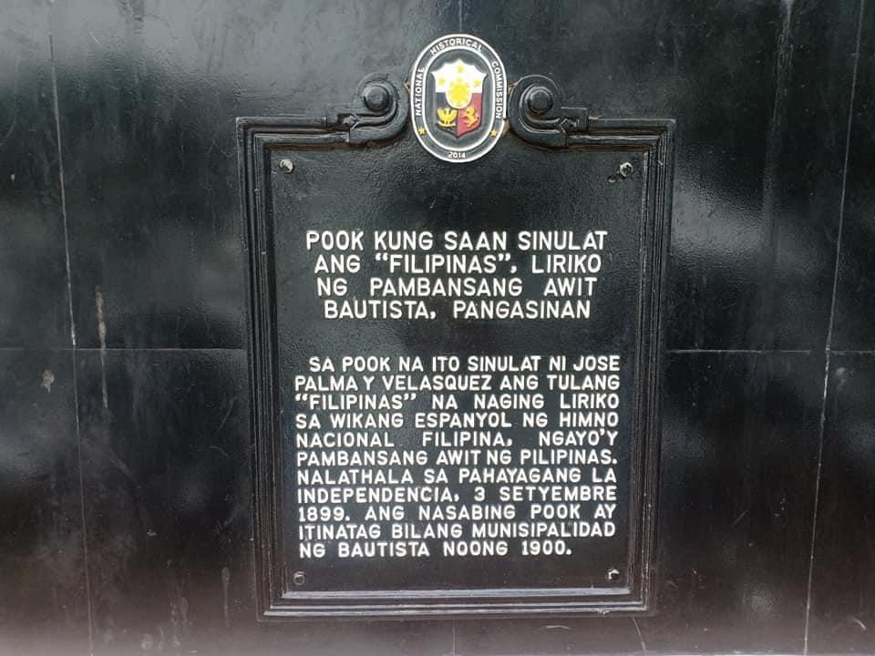
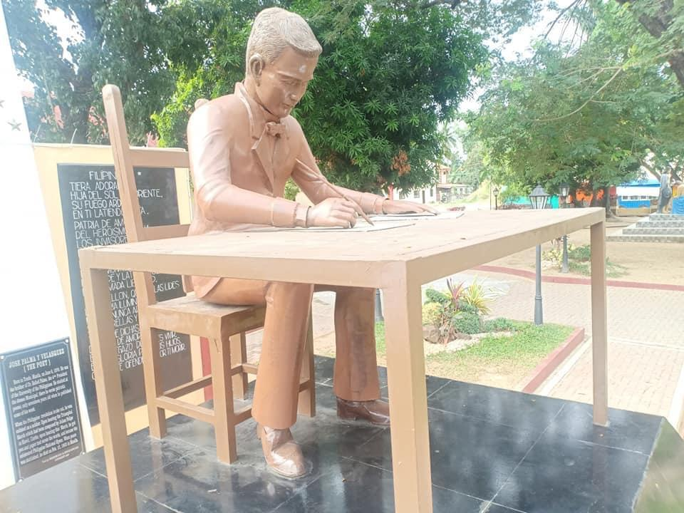
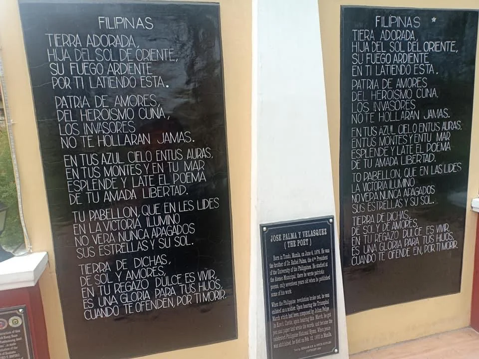

The Jose Palma Historical Marker is a commemorative landmark located in Bani, Pangasinan, Philippines. It honors Jose Palma, a Filipino poet and soldier best known for writing the Spanish lyrics of the poem Filipinas, which later became the lyrics of the Philippine national anthem. The marker signifies his contribution to Filipino nationalism and cultural heritage.

Historical Background
The Jose Palma Historical Marker was installed by the National Historical Commission of the Philippines to commemorate the birthplace of Jose Palma in Bani, Pangasinan. Born in 1876, Palma was a poet and revolutionary who became a member of the Katipunan and contributed to the Philippine Revolution.
In 1899, he wrote the poem Filipinas, which was later adopted as the Spanish lyrics of the Philippine national anthem, Lupang Hinirang. The marker preserves the memory of his role in Philippine history and nationalism.

Design and Inscription
The Jose Palma Historical Marker follows the standard design used by the National Historical Commission of the Philippines, consisting of a cast-iron plaque mounted on a stone or concrete base. The inscription is written in Filipino and contains key biographical details about Palma.
It highlights his contribution as the author of the anthem's lyrics and his involvement in the revolutionary movement. These markers are intended to educate the public while commemorating significant historical figures and events.

Cultural Significance
The marker serves as an important cultural and historical landmark in Bani, Pangasinan, symbolizing local pride and national identity. It is part of the broader network of historical markers across the Philippines that recognize individuals and sites significant to the country's heritage.
The site also contributes to local tourism and helps promote awareness of Jose Palma's legacy in shaping Filipino nationalism.
